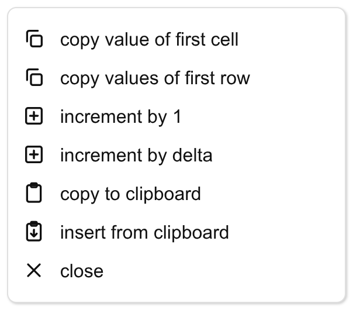
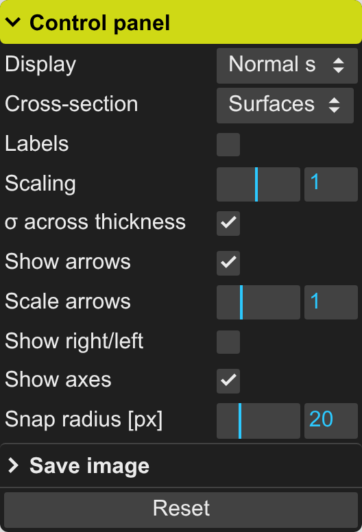

▶ Open duennQs – calculate section properties and stresses of thin-walled cross sections
Overview
Coordinate system and sign convention
Example
Notes on using the app
Tables and context menu
Files, PDF and automatic backup
Input as text and with AI
2D view (System tab)
3D views
Notation
Settings
Installing the app on the desktop
Compatibility
Help: my keyboard has no minus key, virtual keyboard
Contact and error reports
With this web application you can calculate the cross-section properties and stresses of thin-walled cross sections. The centre-line model (wire model) is used and solved with the finite element method [1], [2]. Similar to a frame or truss, the cross section is described by straight elements connected at nodes. Every element must be connected to at least one other element, so there must be no elements standing “alone” in the cross section. From every element there has to be a path to all other elements.
You enter the node coordinates in an auxiliary ȳ-z̄ coordinate system whose origin can be chosen freely. Each element has a start node and an end node and represents quadratic shear stress distributions exactly, so no mesh refinement is needed. If you look along the element from its start to its end, the right side of the element is on your right-hand side.
As the elements can have different material properties, reference values for Young's modulus and Poisson's ratio have to be given. The calculated section properties are ideal (transformed) values related to these reference values. If you use them for a member in a frame analysis program, enter the same reference values there as material data.
The normal stresses due to N, My and Mz are calculated with the usual formulas of mechanics, assuming that plane sections remain plane (Bernoulli), and the normal stresses due to Mω via the warping ordinate. Shear stresses are positive when they act in the direction of the local coordinate system of the element. The positive local direction points from the start node to the end node.
Features of the program:
Sign convention of the internal forces

Sign convention of an element
This example is treated in [2]. The cross-section data are loaded automatically when the app is started for the first time, with the internal forces Vz = 500 kN and My = 600 kNm.

In [2] the cross section is also analysed for the following internal forces:
Mxp = 250 kNm; Mxs = 150 kNm; Mω = 10 kNm²
Vy = 1000 kN; Vz = 500 kN
Material: E = 21,000 kN/cm²; ν = 0.3
The app has the tabs Input, Results, System, 3D, Info and ꔷꔷꔷ (settings). If you move the mouse over a button or press it with your finger for a while, a short help text appears.
Both comma and point are allowed as decimal separator, a thousands separator is not.
The text in the free text field is included in the PDF output, for example for the task and your name. Simple HTML formatting such as <b>bold</b> is possible.
If all elements have the same material data is ticked, the reference values apply to all elements and the columns E and ν of the element table are hidden. fy,Rd is used to mark exceeded equivalent stresses in red in the Results tab, and in 3D it can be shown together with the equivalent stress.
Calculate starts the calculation, after which the app switches to the Results tab. If the Calculate button is highlighted in colour, the input has changed since the last calculation.
You change the number of rows of the node and element tables with − and + next to Number of nodes and Number of elements, or by typing the number. Rows are added or removed at the end of the table.
In the element table, + in the No column inserts a row above, the bin deletes the row. Both can be undone and redone. The node table deliberately does not offer this: nod1 and nod2 of the elements refer to the node numbers, which would otherwise shift unnoticed. This also keeps the numbers in line with your sketch on paper.
To speed up the input, you can copy and generate values in the tables. Select a block by
dragging across the cells while holding the right mouse button. When you release it, the
context menu appears.
Touch screens: First switch on Allow selecting cells with a finger in the ꔷꔷꔷ
tab. Then select the cells by swiping across them with your finger or pen. When you lift it,
the context menu appears.

Context menu
Note: a Bluetooth mouse and/or keyboard can also be connected to tablets and smartphones.
With the buttons above the input you start a new input, read a saved input or save the current input. Input files have the extension .duennqs (on Android .duennqs.json); older .txt files can still be read. You can also simply drag a file into the app window with the mouse. If there are changes that have not been saved yet, the app asks before starting a new input or opening another file.
In the Results tab, the PDF button saves the results as a PDF file, including the input and the cross-section drawing.
The current input is backed up automatically in the browser, for example when the app goes into the background or is closed, and is restored at the next start. This does not replace saving to a file.
When a new version of the app is available, you are asked whether it should be reloaded. The current input is kept.
With the button Cross-section as text (third icon above the input) you paste nodes, elements and further data as text. This lets an AI such as Claude or ChatGPT read a cross-section from a drawing, a photo or a PDF file and prepare the input:
Please check: an AI may misread dimensions or confuse outer and centre-line dimensions. Compare the cross-section in the System tab with the drawing and read the assumptions in the AI's answer.
The text format, using an HEB 300 as an example (centre-line model, without fillets):
# HEB 300: h = 300, b = 300, tf = 19, tw = 11 (mm) → distance between flange centre lines 281 unit mm y_right E 210000 nu 0.3 fyRd 235 My 120 text HEB 300 nodes 1 -150 0 2 0 0 3 150 0 4 -150 281 5 0 281 6 150 281 elements 1 1 2 19 2 2 3 19 3 2 5 11 4 4 5 19 5 5 6 19
With current input as text the dialog shows the current input in this format, e.g. as a template or to give it to an AI for changes. A text file in this format can also be opened like an input file or dragged into the window. Saving always creates a .duennqs file.
The System tab shows the cross section in the ȳ-z̄ plane with centroid, principal axes and shear centre. The crosshair shows the coordinates and snaps to nodes, centroid and shear centre; at nodes it also shows the warping ordinate ω. Numbers shows or hides the node and element numbers, SVG saves the drawing as an SVG file.
The 3D tab shows the results in space. Values are plotted in the direction of the member axis x. With the mouse you rotate (left button), pan (right button) and zoom (wheel) the view; with two fingers you rotate and zoom. With one finger you either query values or pan the view; the button at the bottom left switches between the two. The crosshair snaps to the points of the displayed quantity and shows the value.
The settings are in the Control panel. It only shows the options that fit the selected display.

Control panel
Node incidences of the elements:
nod1 = node number at the start of the element
nod2 = node number at the end of the element
Ageom = geometric cross-section area, without taking the material data into account.
Axes: ȳ, z̄ = auxiliary coordinate system of the input; y, z = parallel axes through the
centroid (the internal forces refer to them); 1, 2 = principal axes with I11 and
I22. Note: in [2] the principal axes are called y and z.
r1, r2, rω = Wagner coefficients referred to the principal axes,
e.g. for lateral-torsional buckling. r1 belongs to I22,
r2 to I11. In [2] the value belonging to Iy is called ry
and the one belonging to Iz is called rz.
Shear stresses due to primary torsion Mxp:
τxs0,L = shear stress from the open-section part, left side, linear across the
element thickness
τxs0,R = shear stress from the open-section part, right side
τxs1 = shear stress from the closed-section part, constant across the element
thickness
Shear stresses due to shear force and secondary torsion Mxs:
τxsa = shear stress at the start of the element a
τxsm = shear stress at the middle of the element m
τxse = shear stress at the end of the element e, all constant across the element
thickness
All other notation analogously.
In the ꔷꔷꔷ tab you set the language, the length unit, the font size, the selection of cells with a finger as well as the colours of the tables and the accent colour. The stress unit follows the length unit: mm → N/mm²; cm → kN/cm²; m → MN/m². Existing input values are converted, after which you need to calculate again. The large font sizes are meant for projection with a beamer.
You can save the settings as defaults in the local storage of the browser; they are then
available again after a restart. The button below deletes the defaults again.
The local storage is not a cookie. This web application performs all calculations locally in
the browser in JavaScript. No data is exchanged with a web server, so no network connection is
needed after the app has started.
This application is programmed as a web application (web app), so you can install it on the desktop under all operating systems. An icon is created, and the app behaves like an app installed from a store. duennQs still runs in the browser, but without controls such as the address bar. The installation differs depending on operating system, version and browser.
On Android, once duennQs has been opened in the Chrome browser, choose Install app from the application menu (three-dot menu) at the top right and confirm the dialog. A new icon named duennQs then appears on the desktop.
On iOS, use the Safari browser. Here the command is called Add to Home Screen (share symbol, then the symbol with the plus).
On Microsoft Windows the procedure is similar to Android. In the Edge browser, the application menu (three-dot menu) contains the following section:

Newer versions of Chrome may ask you directly whether you want to install the app, see the symbol on the right of the address bar:

On macOS, use Microsoft Edge or Google Chrome for the installation.
Firefox does not support the installation at present. On Windows and Linux you can switch to full-screen mode with the F11 key instead.
On Android, iOS and Linux you uninstall the app by deleting the icon on the desktop. On Windows the app is uninstalled like a normal program.
Tested on Windows 10↑, macOS Catalina 10.15.7↑, Ubuntu 22.04↑, Android 9–16 and iOS 15.7.3↑, each with the current version of Chrome, Chromium, Edge, Safari and Firefox. Only the current browser versions are tested and supported.
On some Android devices, especially from Samsung, the numeric keyboard has no minus key. Unfortunately the HTML specification leaves this to the device manufacturer. In this case an additional virtual keyboard is recommended, for example the Google keyboard Gboard from the Play Store. After installing it, you still have to activate the keyboard, ideally right away in the Play Store. Later you can switch between the installed keyboards at any time (symbol at the bottom right of the keyboard).
For suggestions, requests and error reports, please use the e-mail address statikverstehen@web.de (in English or German). For error reports, a copy of the input file as an attachment is usually helpful.
[1] Matthias Kraus: Computerorientierte Berechnungsmethoden für beliebige Stabquerschnitte des Stahlbaus, doctoral thesis, Bochum 2005
[2] Matthias Kraus; Rolf Kindmann:
Finite-Elemente-Methoden im Stahlbau, 2nd edition, Ernst W. & Sohn Verlag, 2019
English edition: Rolf Kindmann; Matthias Kraus:
Steel Structures: Design using FEM, Ernst W. & Sohn Verlag, 2011